Reading Comprehension Worksheets
Informational text as a cloze passage with word bank, a QR-code listening task with free audio, and a word search – 5 pages with answer keys.
3,976 resources
Subject
Grade
By grade: 5th Grade · 9th Grade
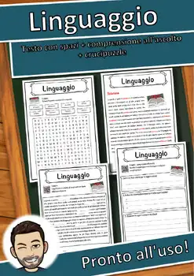
Linguaggio – Italian Reading Comprehension Worksheet (Scheda): Cloze & Listening
Lichene – Italian Reading Comprehension Worksheet (Scheda): Cloze & Listening
Licantropo – Italian Reading Comprehension Worksheet (Scheda): Cloze & Listening
Libro – Italian Reading Comprehension Worksheet (Scheda): Cloze & Listening
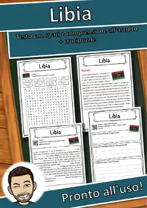
Libia – Italian Reading Comprehension Worksheet (Scheda): Cloze & Listening
Libertà – Italian Reading Comprehension Worksheet (Scheda): Cloze & Listening
Libano – Italian Reading Comprehension Worksheet (Scheda): Cloze & Listening
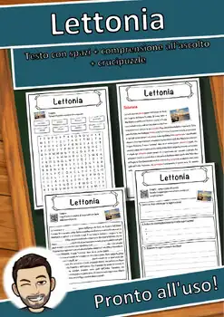
Lettonia – Italian Reading Comprehension Worksheet (Scheda): Cloze & Listening
Lettera – Italian Reading Comprehension Worksheet (Scheda): Cloze & Listening
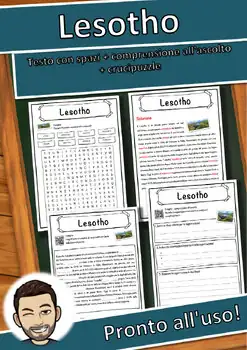
Lesotho – Italian Reading Comprehension Worksheet (Scheda): Cloze & Listening
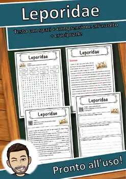
Leporidae – Italian Reading Comprehension Worksheet (Scheda): Cloze & Listening
Legno – Italian Reading Comprehension Worksheet (Scheda): Cloze & Listening
Le mille e una notte – Italian Reading: Cloze, Listening & Word Search
Lavoro minorile – Italian Reading: Cloze, Listening & Word Search
Lavorazione della ceramica – Italian Reading: Cloze, Listening & Word Search
Lavastoviglie – Italian Reading: Cloze, Listening & Word Search
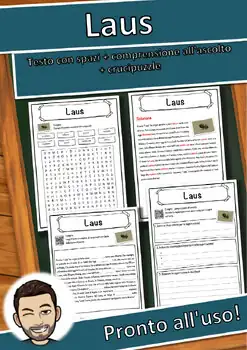
Laus – Italian Reading: Cloze Text, Listening Task & Word Search (Scheda)
Laurenzio – Italian Reading: Cloze Text, Listening Task & Word Search (Scheda)
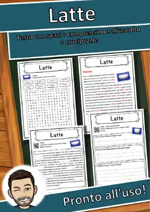
Latte – Italian Reading: Cloze Text, Listening Task & Word Search (Scheda)
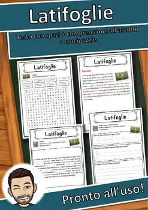
Latifoglie – Italian Reading: Cloze Text, Listening Task & Word Search (Scheda)
Laser – Italian Reading: Cloze Text, Listening Task & Word Search (Scheda)
Lasagne al forno – Italian Reading: Cloze, Listening & Word Search
Las Vegas – Italian Reading: Cloze Text, Listening Task & Word Search (Scheda)
Larva – Italian Reading: Cloze Text, Listening Task & Word Search (Scheda)
Larix – Italian Reading: Cloze Text, Listening Task & Word Search (Scheda)
Larinae – Italian Reading: Cloze Text, Listening Task & Word Search (Scheda)
Laos – Italian Reading: Cloze Text, Listening Task & Word Search (Scheda)
Lantanio – Italian Reading: Cloze Text, Listening Task & Word Search (Scheda)
Lance Armstrong – Italian Reading: Cloze, Listening & Word Search
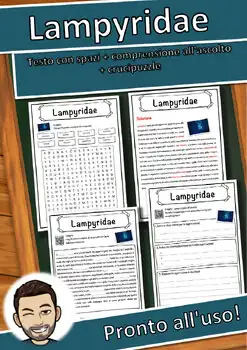
Lampyridae – Italian Reading: Cloze Text, Listening Task & Word Search (Scheda)
Lampada a incandescenza – Italian Reading: Cloze, Listening & Word Search
Lama – Italian Reading: Cloze Text, Listening Task & Word Search (Scheda)
Lagos – Italian Reading: Cloze Text, Listening Task & Word Search (Scheda)
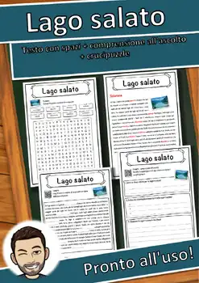
Lago salato – Italian Reading: Cloze Text, Listening Task & Word Search (Scheda)
Lago di Zurigo – Italian Reading: Cloze, Listening & Word Search
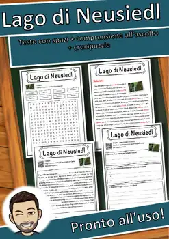
Lago di Neusiedl – Italian Reading: Cloze, Listening & Word Search
Lago di Garda – Italian Reading: Cloze, Listening & Word Search
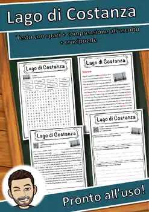
Lago di Costanza – Italian Reading: Cloze, Listening & Word Search
Lago dei Quattro Cantoni – Italian Reading: Cloze, Listening & Word Search
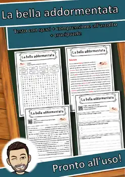
La bella addormentata – Italian Reading: Cloze, Listening & Word Search
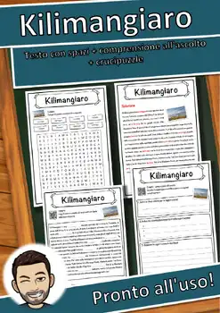
Kilimangiaro – Italian Reading: Cloze, Listening & Word Search
Kiefer – Italian Reading: Cloze Text, Listening Task & Word Search (Scheda)
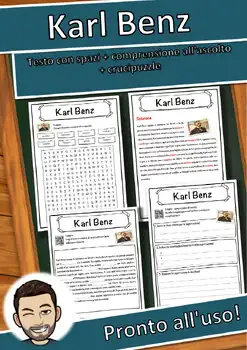
Karl Benz – Italian Reading: Cloze Text, Listening Task & Word Search (Scheda)
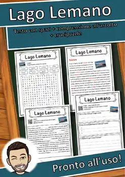
Lago Lemano – Italian Reading: Cloze Text, Listening Task & Word Search (Scheda)
Lago Bajkal – Italian Reading: Cloze Text, Listening Task & Word Search (Scheda)
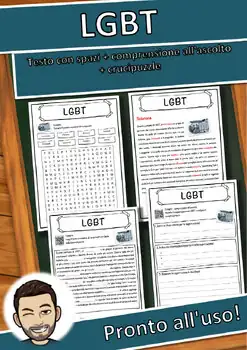
LGBT – Italian Reading: Cloze Text, Listening Task & Word Search (Scheda)
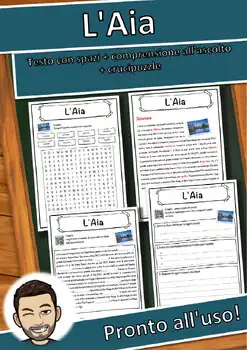
L'Aia – Italian Reading: Cloze Text, Listening Task & Word Search (Scheda)
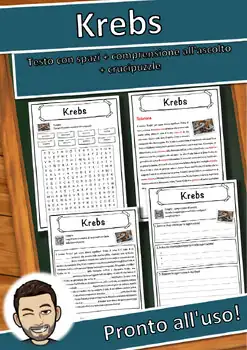
Krebs – Italian Reading: Cloze Text, Listening Task & Word Search (Scheda)
No resources found – try a different search term or filter.